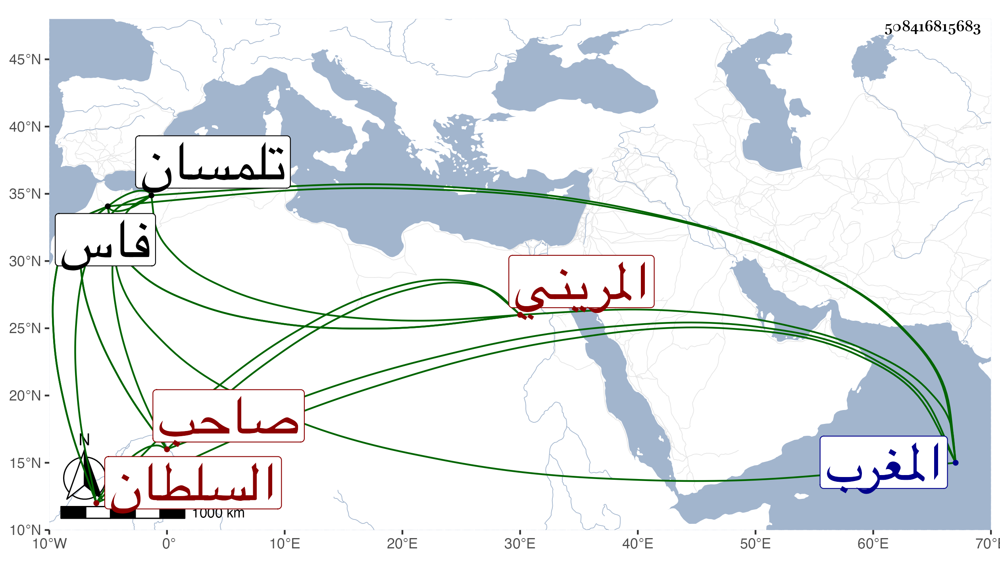

0902Sakhawi.DawLamic.ITO20230111-ara1.EIS1600.508416815683
Biography ID: 508416815683
97
محمد بن عبد العزيز بن علي بن عثمان بن يعقوب بن عبد الحق السلطان السعيد أبو محمد بن أبي فارس بن أبي الحسن المريني صاحب مدينة فاس وبلاد المغرب . طول المقريزي ترجمته وأنه أقيم وهو ابن خمس سنين بعناية الوزير أبي بكر بن غازي بعد موت أبيه في ربيع الآخر سنة أربع وسبعين وسبعمائة واستبد الوزير بالتكلم فلم يلبث إلا يسيرا وتحركوا عليه فانتزع أبو حمو موسى بن يوسف تلمسان ومحا دعوة بني مرين من أعماله وأبو عبد الله بن الأحمر حبل الفتح ومحا دعوة بني مرين مما وراء البحر بل وأبو العباس أحمد بن أبي سالم إبراهيم على فاس في أول المحرم سنة ست وسبعين فكانت مدة السعيد سنة وتسعة أشهر إلا أياما ثم بعد ثمان وثلاثين سنة وسبعة أشهر أعيد وذلك في أول شعبان سنة ثلاث عشرة بعد محاربات وفتن ودامت الحروب بعد ذلك إلى أن تقنطر به فرسه في بعضها بخندق وهو سكران فأدرك به فحز رأسه في محرم سنة ست عشرة وجئ به إلى أبي سعيد .
